Salinity and heat cut crop productivity, so ReLEAF built an assay that asks whether a protectant helps Arabidopsis through those stresses, and when it has to arrive.
We built the screen from nothing in five months, on agar, in hydroponics and in soil. A salt ladder sets the stress for every run: root length falls 74.95 to 1.36 mm across 0 to 150 mM NaCl, nine seedlings a group, and three timings test when a protectant has to arrive. The CH Bio peptide gave our clearest rescue at 100 mM. Our own candidates have not shown an effect yet. Two lessons changed every run after them: seedlings enter hydroponics from agar, and a bacterial prep is blotted before it touches a plant.
Agar Salinity and heat stress assaysSoil Salinity and heat stress in pots
Hydroponics The final box and its light-blocking box
Stratify
4 days of stratification at 4 °C was for the purpose of synchronising the germination of imbibed seedlings, which ensures a homogenous growth of the plants.
Medium
½ MS, MES, pH 5.7–5.8; 1% sucrose from set 4
Duration
2 days to June, 4 days from July
Sterilise
Chlorine gas, advised June
Grow on
Seedlings grow in the chamber until transfer. Prof. Cheng’s window is ten to twenty days old, with salt capped at 200 mM [1].
Chamber
22 °C, 40–45% RH
Age
4 days in every dated set; 7 days from the ACC deaminase sets
Light
Extra tubes from July
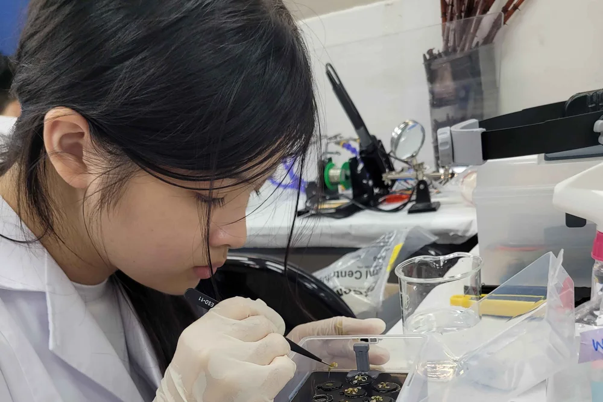
Transfer
Seedlings are matched for root length and laid tip-first on a drawn baseline, so all growth is measured from day 0.
Square plate
50 mL, upright
Round plate
Flat, 40 seeds
Density
12 per square plate
Treat
Three arms a day apart, so the screen says when a protectant must arrive as well as whether it works.
Arms
Pre-, co-, post-treatment, untreated control
Method
Mixed into the agar, then pipetted onto the surface, then sprayed
Observe
One photograph set a day in a light box, on a black and on a white background. Contaminated plates are logged and excluded.
Cadence
Daily, named shift
Logged
Bleaching, contamination, root direction
Score
Three readouts, because each one fails in a different way.
Root length
ImageJ, traced by hand [6]
Fresh weight
Pooled seedlings, tared tube
Chlorophyll
80% acetone extract, read at 645 and 663 nm [5]
Agar
Why agar
Agar trials were conducted to fine-tune protectant treatments and NaCl stress within a controlled laboratory environment, ensuring uniform nutrient availability and precise stress exposure. This setup enabled the evaluation and screening of protectant efficacy, helping identify top performing protectant candidates while establishing clear physiological baselines prior to testing in complex soil systems. Furthermore, agar media provide essential nutrients and an accelerated timeframe for observing early physiological changes in Arabidopsis seedlings, facilitating rapid and high-throughput testing across subsequent experimental iterations.
Stress protocols
Salinity stress
A total of 11 agar and 2 soil experimental sets were conducted under NaCl-induced salt stress to evaluate the efficacy of different protectants.
A total of 3 agar and 2 soil experimental sets were conducted under 5 days of 37 °C-induced heat stress to evaluate the efficacy of different protectants.
Targeting heat stress, we took inspiration from Zhang et al. [10] for prolonged thermo priming assays protocol designing. Initially, seeds are germinated and grown on Murashige and Skoog (MS) agar plates at 22 °C. Until the seedlings are grown to 10 days old, they’re held at 37 °C for 5 days to induce acquired thermotolerance prior to subsequent higher stress damage, and then returned to 22 °C for 5 days of recovery. Following recovery, seedling survival and physiological damage are assessed and analyzed via multiple quantitative readouts: fresh weight, chlorophyll content, and anthocyanin measurement. Both the agar and soil based thermo priming assays are established based on this foundational framework and methodology, with specific parameters refined to accommodate our experimental setups.
Set design
Among these sets, six sets evaluated the non-reducing disaccharide trehalose, which has been shown to have a protective effect under salinity stress (PMID: 25400644). The remaining two sets used commercially available CH Biotech’s peptide to do the preliminary tests. One additional set used filtered ACC deaminase against salinity stress. Our experimental sets 1–2 were designed to establish the experimental protocols and assess the initial response of plants to NaCl treatment. Therefore, only two NaCl concentrations, 100 and 150 mM, and two trehalose concentrations, 0.5 and 1 mM, were tested. However, we soon realized that 150 mM of NaCl was too strong for the plants and they dried quickly due to the osmotic stress, and while our data predicted the effect of NaCl on the plants, there were no visual differences between protectant-treated and untreated groups.
Continuing with the belief that higher NaCl stress should be fought with higher trehalose content, we conducted experimental set 6, where 0 mM and 5 mM of trehalose was used against 0 mM, 75 mM, 100 mM, and 150 mM of NaCl.
For our seventh experimental trial, we made a few key changes in our plant stress and protection protocol. Firstly, we wanted to verify the purpose and need for an AIoT prediction model and stress sensors in the farming environment, so one of our chosen independent variables was the treatment time. The pre-treatment group would have CH biopeptide added 1 day before stress strikes, the co-treatment group would have the protectant added on the same day, then the post-treatment group would be treated one day after the NaCl is added. Next, the CH biopeptide had a recommended dilution level, which was 1/500, for optimal usage, so we did not change the concentration as it would not be used in real fields with a changed concentration level either. Lastly, this group of plants went through 4 days of stratification and 4 days at 22 °C before the pre-treatment group started directly in their plates. Unlike previous experimental sets, we did not want the salt stress and protectant applied on the first day, and as Arabidopsis plants are extremely fragile and vulnerable to transfer, we decided to add the NaCl and CH biopeptide directly into the agar plate.
Moving on to the first ACCD pre-test, we purified our first round of ACCD and contained it in multiple 15 mL centrifuge tubes for treatment. We had changed the method of treatment to spraying, one up, one left, and one right, yet we followed the same pre-treatment, co-treatment, and post-treatment protocols.
Application
Phase 1 · Trehalose + NaCl combinations
In phase 1 of trehalose testing (including 3 sets of pre-tests and 4 sets of official testings) fine tuned concentrations of trehalose protectants were added directly into the mixture with agar before solidifying, meaning each experimental group contains the corresponding trehalose and salinity concentrations. We selected vertical planting of agar plates to allow clearer and better visions for root length observation and analysis.
On Day 0, sterilized Arabidopsis seeds were vernalized on ½ MS neutral vertical agar plates for 4 days at 4 °C, and moved to the incubator for 4 days germination. On day 8, 4 days old Arabidopsis seedlings were transferred to each of the newly made vertical salinity agar plates containing a corresponding mixture of trehalose with NaCl. During the transferring process, we screen for seedlings with similar root lengths and similar growth levels, and place 12 seedlings per salinity plate with each of their tips of the roots onto a straight baseline drawn by a marker. Thus we could immediately start observing the seedling's root length difference and physiological changes after they’re exposed to different concentrations of NaCl and trehalose, evaluating the rescue effectiveness and growth for each combination over a course of 14 days.
Phase 2 · CH Bio peptide + NaCl
Using commercial CH bio peptide, the primary objective is to evaluate the efficacy of commercial protectants’ effectiveness and identify its best application timing in response to the exact point where salinity stress hits. Therefore, CH bio peptide application is categorized into 3 treatment timing groups: pre-treatment, co-treatment, and post-treatment. Different treatment timings are essential connecting to our project goal, “to supply protectants at the optimal timing before stress harms the plants”. These 3 treatment timing groups and the control group (no protectant) were each subjected to three NaCl concentrations (0 mM, 75 mM, and 100 mM), giving a total of 12 experimental conditions.
Looking at the entire experiment timeline, on day 0, Arabidopsis seeds were stratified on ½ MS neutral agar for 4 days at 4 °C, then transferred to a growth chamber for 4 days germination. Protectant applications were initiated subsequently starting from Day 8, and administered at 24-hour intervals between each treatment timing. Treatment timings can be considered as another set of days (Day −1: pre-treatment, Day 0: NaCl + co-treatment, Day 1: post-treatment). Thus, the day of salt stress application is Day 0, whereas NaCl (75 mM and 100 mM NaCl) was applied to all corresponding treatment groups, coinciding with the application for the co-treatment group.
Timeline design for every experiment on commercial CH Bio peptide against salinity stress.
On the technical side, we applied the protectant directly onto the surface of the agar by adding 3 mL then removing 2 mL of excess to achieve 1 mL of final protectant added (the surface tension of the agar causes uneven distribution of protectant, therefore we added a larger volume of protectant to completely submerge the surface first, then suck out the excess protectant last). Furthermore, to prevent varying factors of growth between groups with and without protectants added (as liquids can affect plants’ absorption and growth), we added the equal volume of sterile water (1 mL) to every other group to simulate equal liquid effects on plants.
Phase 3 · ACC deaminase + NaCl
Secreted by our engineered B. subtilis, ACC deaminase, LEA, and BoPEP4 were used as the protectant against salinity stress in Phase 3. Before applying, the protectant was purified through a 0.22 µm filter. The main difference in this phase’s protectant application is that we utilized a spraying method. We used a sterilized spraying nozzle to dispense 3 sprays of ACCD onto the surface of plants, administered by spraying in 3 equal areas of individual sections (one top left, one top right, and one bottom) through a distance of 10 cm between the nozzle and agar plate.
The overall experimental flow still follows the timeline from phase 2 of CH bio peptide testing, while we extended the germination time from 4 days to 7 days (this suggestion was provided by Prof. Cheng to use stronger plants for stress testing).
Timeline design for experiments on protectants ACC deaminase and LEA against salinity stress.
Considering that vertical plates cannot hold larger amounts of liquid protectant on the surface like horizontal plates can, we used a spray nozzle that dispensed 1.67 mL for every 3 sprays which we administered by spraying one up, one left, and one right; all sprays were administered above the line with root tips attached. If there were more than 3 sprays, the protectant would be carried downwards by the weight, and we decided to not spray one at the bottom since it would flow downwards regardless.
Hydroponics
Why hydroponics
Abiotic stress, such as salinity stress and heat stress, negatively affects crop productivity. To test the effectiveness of our self-produced protectants under both types of stress, we chose to use a hydroponic system that allows for precise control of environmental factors. Compared with soil-based systems, hydroponics reduces the number of uncontrolled variables, such as differences in soil composition, microbial communities, and water distribution. Therefore, we can establish and maintain consistent experimental conditions by precisely controlling environmental parameters, including pH, electrical conductivity, temperature, and dissolved oxygen. In addition, nutrients and stress treatments can be delivered more uniformly to all plants through the nutrient solution, improving experimental consistency. Because treatments are added directly to the root environment, the hydroponic cultivation system allows us to rapidly observe plant responses to different stress conditions and evaluate the protective effects of our target protectants.
Where our ideas come from
We are inspired by Matthew Gilliham’s hydroponics culture system (Conn et al., 2013) [7]. First, Arabidopsis seeds were sown on 0.6% agar containing black microcentrifuge-tube lids, each with a 3 mm diameter hole punched using a leather punch. Then, the lids containing seeds were placed on a microcentrifuge tube rack with the agar side facing down. Each well was filled with 2.1 mL of ½ MS medium, allowing the agar to remain in contact with the medium throughout stratification and germination. The seeds were stratified at 4 °C in the dark for at least 48 hours, and then transferred to a growth chamber maintained at 22 °C under a 16-hour light/8-hour dark photoperiod. After germination, 4-day-old seedlings were directly transferred onto the floating board or holder and left to grow in the hydroponic box. The tank was kept dark to reduce algal growth and continuously aerated with air stones to maintain sufficient dissolved oxygen. The nutrient solution was regularly replaced every 2–3 days, and the plants were then used for experimental treatments and physiological measurements.
Prototypes
First boxes
Final box
Prototype 1
Big black plastic hydroponic box with black taped foam board.
This is our first design of a hydroponics box. We chose a larger box in the beginning, with five agar-containing seed holders, and the tank can be filled with about 500 mL of ½ MS medium. This design wasn't ideal because the foam board had more space to accommodate more seed holders, but we only used five. In addition, the texture of the board is too fragile to be reused; it is cut from the foam and then taped with black tape. These processes are more time-consuming and difficult to scale up for mass production. Furthermore, the depth of the box made it difficult to observe the root system. The black box also made it difficult to monitor the medium when it became turbid.
Prototype 2
Small hydroponic box with removable lids and platform.
Therefore, for the second version of the hydroponic box we chose a much smaller box than the previous one. We found this box on the internet and thought this may be a good hydroponic box. This box has holders for the lids and labels on the box lid. However, the medium easily leaks from two sites when we try to move the box. One is the joint, and the other is the bottom. Even when we tried to cover the hole with black tape to prevent leakage from the bottom, it was not sufficient to avoid the leak. Another problem is the lid easily falls into the box if we don’t place it at a specific angle.
Prototype 3
Long transparent box with square black-taped foam board.
So we kept adjusting the design and developed the third version of the hydroponic box. Due to our previous experience, we discovered the importance of the box being opaque and deep enough to provide sufficient space for Arabidopsis root development. However, when we tried to fix two main problems from the previous prototypes, prototype 1 not easily showing the turbidity of the medium and the leakage of the medium in prototype 2, we encountered some new issues. First, the foam board was too tightly fitted with the box and difficult to reach when we tried to change the medium. Additionally, the box is too narrow for the plants to grow and limits the number of plants we can grow in each box.
Prototype 4
Transparent tip box with foam board.
After several rounds of trial and error, we developed the final version of the hydroponic box. We realized a medium-sized box would be ideal because it doesn't occupy too much space. It also allows us to easily observe the medium turbidity and root system, so we chose a 1000 µL tip box. The advantage of using a tip box is that it is suitable to reuse. We can reuse it multiple times after cleaning and autoclaving. Its size is enough to plant the amount of plants we want and it is transparent for us to observe the root system. We can punch at least 5 to 13 holes in one board. The contamination of this box is also less often than the previous two that we tested.
Prototype 4.1
Transparent tip box with 3D printed board.
Finally, this is our finalized and improved hydroponic box prototype, version 4.1. We replaced the foam board with a 3D-printed board and added a carrying handle on each side. This carrying handle makes it easier for us to change the hydroponic medium. The reason why we changed it is because the foam board is really fragile and easy to break. The foam board became softened after it stayed in the water for a long time. To make the quality of the hydroponic system more consistent, we decided to use a 3D printed board, so that it is far simpler to maintain the shape of the board and prevent broken boards in the middle of changing medium.
Stress design
To evaluate whether our protectants could reduce abiotic stress in plants, we developed multiple experimental platforms, not only agar systems. We needed a platform in which stress could be easily applied for different durations and the concentration of protectants could be precisely controlled. As a result, we can measure the fresh weight or root length of these treated plants, providing simple and accessible ways to quantify the results. In the beginning, we reviewed related papers to figure out how they established stress protocols on Arabidopsis. Here we focused on heat and salinity stress.
Salinity stress
First, we followed Cortés-Jiménez et al. [11]. This experiment tested six NaCl concentrations, 0, 50, 100, 150, 200 and 250 mM, rescued by Azospirillum brasilense, the most studied plant growth promoting bacteria (PGPB). According to the results, plant stems under 0–100 mM NaCl did better than under 150–250 mM, and best at 50 and 100 mM NaCl. This means that these two salinity concentrations are moderate enough for the plant to be rescued by the bacteria. According to the pretests from agar, Arabidopsis applied with 100 mM NaCl expresses a strong stress response but doesn’t die at this threshold and could be rescued. Therefore, we decided to test 100 mM NaCl in our salinity test. Next, we decided to use CH biopeptide to evaluate the stress response of plants under 100 mM NaCl. We used CH bio peptide since it is a commercial product that helps plants resist abiotic stress.
Heat stress
One of our main reference papers on heat stress is Auverlot et al. [4], which describes how the different stages of a plant may have different heat tolerance. This helped us make a quick decision about which developmental stage is most suitable for each condition, and also about the growth medium composition, the timing of stress application, and the days of recovery time. This information was particularly important for us because this was our first time cultivating Arabidopsis in the hydroponic platform and also with the heat treatment. For salinity experiments, we therefore designed the system around three variables: plant developmental stage → timing of protectant application → timing and intensity of stress. Overall, integrating all the information will help us accelerate our experiments and increase the success of protectant testing in the hydroponic system.
Soil
Why soil
Soil trials were done to simulate real field conditions and allow protectants to be validated under complex conditions after testing in controlled environments such as agar and hydroponics. Soil introduces physical matrix interactions, including water retention and pore size distribution, which affect how the NaCl and protectant diffuse and reach the plant roots. Additionally, soil contains native microbial flora, allowing us to validate its real world viability. Hydroponics and agar assays are for baseline fine tuning, protocol simulations, and controlled proof of concept, while demonstrating efficacy in real soil reflects smallholder farming realities.
Planting
Three methods of soil-grown Arabidopsis
1
Transferring 7-day-old Arabidopsis from vertical agar plates to soil pots.
ProblemDuring the transfer process, plant roots are easily damaged and stressed, which led to inconsistent growth of plants.
2
Seeds stratified in sterile water for 3 days, then sown individually in the soil pots, 4 per pot.
ProblemThe n value was too small, and plant growth was not consistent enough to have enough sets to collect measurable data.
3
Seeds stratified in 1 mL of sterile water for 3 days and dispersed using a micropipette; smaller plants are picked out at later growth stages to keep plants a similar size in each experimental group.
KeptSuggested by Prof. Cheng.
Two stages of plant growth
1
First used 1-month-old plants.
ProblemThe plant is already close to the end of its life cycle.
2
Then used 2-week-old plants, following Prof. Cheng’s suggestions.
Salt schedule
Salt behaves differently in soil platforms compared to the agar trials. The first attempt built up 25 mM per day toward 100 mM, a gradual ramp proposed by Dr. Verslues [8]. Prof. Cheng's assessment, recorded on 2 September, pointed out that for a month-old plant the accumulation method is too mild, and worse, watering between doses washes the salt back out instead of letting it accumulate.
100 mMPour 1
200 mMPour 2
300 mMPour 3
300 mMRepeat until visible
The revised schedule pours equal volumes of 100, then 200, then 300 mM, with no watering in between, and then keeps repeating 300 mM until the effect is visible [9]. It has no fixed end date; the plants decide when it stops. A pot takes 30 to 50 mL before a little runs out of the bottom, which is how we know it reached the roots, and the tray under it wants to be 1 to 2 cm deep so it can hold 200 to 400 mL at a time.
We tested three application timings of ACCD protectant, including pre-treatment, co-treatment, and post-treatment, under the NaCl wash of 100 mM, 200 mM, until reaching a final concentration of 300 mM NaCl.
Sets 1 to 3 · 10 May to 11 June · pre-tests, horizontal plates
Pretests: trehalose, experimental sets 1–3
Conducting preliminary testing using solely trehalose protectant helped us quantify growth capacity when protectant is added. Each plate still had all 8–9 of their seedlings germinated, so we decided to fine tune the optimal trehalose concentration for rescue effectiveness evaluation. With experimental set 3, we tested out 4 different trehalose dosages, including 0.125 mM, 0.25 mM and 0.5 mM, all under 100 mM NaCl. Experimental groups 1 and 2 revealed that 1 mM was too toxic and 0.5 mM was insufficient against strong salt levels, so we considered manipulating the concentration in between the two to reach a balance. As a pre-test, we were able to identify the early effects of salinity stress on Arabidopsis and key milestones that can be observed, such as stunted root growth or minimized leaf area. Since our protocol was not yet standardized at the time, data collected from early experimental sets only include image documentation (done in a light box with both a black and white background and surrounding lights turned off).
Set
Dates (from the incubator)
Duration
Purpose
Protectant
NaCl
Protectant concentrations
#1
20260510 → 20260523
14 days
Pretest: 1. practice and familiarize with planting Arabidopsis in agar plates and overall protocol 2. fine tuning salinity concentrations
Trehalose
50 mM and 100 mM
1 mM
#2
20260520 → 20260604
16 days
Pretest: 1. practice and familiarize with planting Arabidopsis in agar plates and overall protocol 2. fine tuning salinity concentrations 3. 1 mM trehalose too toxic
Trehalose
100 mM and 150 mM
0.5 mM
#3 trial 1
20260527 → 20260607
10 days
Pretest: 1. fine tuning lower trehalose concentrations against standardized 100 mM NaCl (best performed) 2. the 1 and 0.5 mM trehalose has some levels of inhibitory effects on plant growth
Trehalose
100 mM
0.125, 0.25, 0.5 mM
#3 trial 2
20260529 → 20260611
13 days
Pretest: simultaneous trials within experiment set 3 to increase sample size
Trehalose
100 mM
0.125, 0.25, 0.5 mM
Table 1: Overview and further elaboration on pretest experimental sets, including experimental sets 1–3
Experimental set 3 trial 2, last day of data collection (day 14).
Set 4 · 18 to 30 June · 12 days · vertical square plates
Evaluate higher trehalose dose against standardized 100 mM NaCl
After sufficient hands-on experience in protocol design and standardizing the structure of our setups, we began official trehalose experiments from experimental set #4 to #6. Each set varies by the NaCl and trehalose concentration combinations, driven by different purposes in evaluation, where we place plants in low to high stress levels to evaluate the protectants’ effectiveness in response.
Table 2: sets 4 to 6
Set
Dates (from the incubator)
Duration
Purpose
Protectant
NaCl
Protectant concentrations
#4
20260618 → 20260630 (stratified 2 days)
12 days
Main experiment: fine tuning trehalose dosage higher to 1.0 mM, evaluating the effectiveness of higher trehalose concentration against standardized 100 mM NaCl. Changes: sucrose 3% → 1% to prevent dehydration; after meetings with Dr. Peng, switch from horizontal to vertical planting to better observe gravitational root length growth and enable ImageJ analysis; ½ MS agar plate → 50 mL (with 1% sucrose, MES buffer and 1% agar); plant stage 4-day-old seedlings; readouts root length, fresh weight, chlorophyll content
Trehalose
100 mM
0.25, 0.5, 1.0 mM
#5 trials 1 and 2
20260704 → 20260712
18 days
Main experiment: testing with significantly higher NaCl stress levels and trehalose dosage, a higher concentration gradient to evaluate trehalose effectiveness in different scenarios. Changes: stratification from 2 → 4 days; more diverse data for dry lab modeling
Trehalose
0, 150, 250 mM
1, 5, 10 mM
#6
20260729 → 20260803
6 days
Main experiment: 1. testing with smaller intervals of NaCl concentration without exceeding 150 mM (250 mM NaCl was too toxic in set #5) 2. testing the specific 5 mM trehalose dose (best rescue in set #5)
Trehalose
75, 100, 150 mM
5 mM
Table 2: Overview and further elaboration on experimental sets 4–6
Summary
All exogenous trehalose concentrations at 0.25, 0.5 and 1.0 mM under 100 mM NaCl salinity stress have demonstrated obvious rescue effectiveness.
0.5 mM trehalose under 100 mM NaCl exhibited the highest chlorophyll content; 1.0 mM trehalose under 100 mM NaCl exhibited the longest root elongation.
Experimental set 4 end result, last day of observation (day 14). Every 100 mM NaCl group with trehalose treatment (f, g, h) exhibited longer root elongation and more lateral root growth compared to the 100 mM NaCl group with 0 mM trehalose (e).Exogenous trehalose dose at 0, 0.25, 0.5, 1.0 mM treated plants under 100 mM NaCl demonstrates rescue effects.
Figure legend
a) Bar graph showing the fresh weight of individual groups. b) Bar graph showing the relative chlorophyll content of each group with fresh weight normalization. c) Bar graph showing the relative chlorophyll content of each group without fresh weight normalization. d) Primary root length of each individual group (mm) quantified by ImageJ. Sterilized seeds were sown onto neutral ½ MS agar plates and cold stratified for 4 days, transferred to plates containing NaCl (0, 100 mM) at the seventh day of growth. Statistical significance relative to the untreated 100 mM NaCl stressed control is indicated by brackets: ** p<0.01 and **** p<0.001 (one-way ANOVA with Dunnett’s multiple comparisons test). Data represent mean ± SEM. ND, not determined in primary root length analysis due to microbial contamination in the 0 mM NaCl control groups. Chlorophyll extraction and root length analysis were performed on day 14 of plant growth.
This set maintains similar testing conditions to set 3, utilizing 100 mM NaCl as the standardized stress level, while evaluating a slightly higher range of trehalose doses (0.25, 0.5 and 1.0 mM compared to 0.125, 0.25 and 0.5 mM in set 3). It aimed to assess the rescue efficacy of higher trehalose concentration against fixed 100 mM NaCl salt stress, and to allow direct comparison with the lower doses from the previous set. We introduced major changes in the experimental set-up: the cultivation platform shifted from horizontal to vertical planting, to better observe gravitational root length growth and to facilitate precise root quantification using ImageJ software; the overall growth timeline was adjusted to 2 days stratification at 4 °C, then 4 days growth, then transfer of the 4-day-old seedlings onto newly made salinity plates. 3 major primary parameters were evaluated to quantify overall growth: root length, fresh weight, and chlorophyll content.
Overall, all exogenous trehalose concentrations have demonstrated obvious rescue effectiveness under the subjected 100 mM NaCl stress in relation to the 100 mM NaCl group with 0 mM trehalose, while among the different treatment groups, the leaf colors vary from slight purple to bright green, indicating the imposed ionic stress and toxicity or trehalose rescue effectiveness correspondingly.
Referring to the relative chlorophyll content, the results aligned with a previous prediction that had not been validated before: while too much NaCl was damaging to plant growth, too much trehalose could be as well. As shown, the lowest chlorophyll content occurred in the 1.0 mM trehalose control and the 100 mM NaCl control groups. In fact, the 1.0 mM trehalose group without stress even yielded lower chlorophyll levels than the 100 mM NaCl salinity group. Furthermore, among the plants subjected to 100 mM NaCl salt stress, the 0.5 mM trehalose treatment demonstrated higher chlorophyll content than the higher 1.0 mM dose. This highlights the necessity for fine-tuning protectant concentration, whereas the 0.25 mM dose is slightly inadequate for maximizing rescue effectiveness.
Physiological observations based on the second row of plates reveal that leaves in the 0.25 mM and 1.0 mM trehalose groups partially turned purple, indicating anthocyanin accumulation driven by osmotic stress, meanwhile also validating the physiological effects of a severe 100 mM NaCl stress level. In contrast, leaves from the 0.5 mM trehalose group predominantly maintained a bright or dark green appearance with minimal purple discoloration. The physiological differences demonstrate the necessity of fine-tuning concentration and the relatively outstanding rescue effectiveness of the 0.5 mM trehalose dose. To strengthen the protectant necessity, the groups undergoing 100 mM NaCl stress and trehalose treatments at the same time sustained the greatest amount of chlorophyll, even surpassing the groups without NaCl treatment.
Set 5 · 4 to 12 July · trials 1 and 2 · vertical square plates
Testing with significantly higher NaCl stress levels and trehalose dosages
Summary
Exogenous trehalose demonstrated significant dose-dependent rescue under stressed 150 mM NaCl groups, meaning an upward trajectory of chlorophyll content as trehalose dosage increases.
250 mM NaCl is revealed to be too toxic for plants to sustain even with protectants received.
Experimental set 5 trial 2, last day of experiment (day 12).High exogenous trehalose doses (0, 1, 5, 10 mM) demonstrated obvious dose-dependent rescue under stressed 150 mM NaCl groups.
Figure legend
a) Bar graph showing the fresh weight of individual groups. b) Bar graph showing the relative chlorophyll content of each group with fresh weight normalization. c) Bar graph showing the relative chlorophyll content of each group without fresh weight normalization. d) Primary root length of each individual group (mm) quantified by ImageJ. Sterilized seeds were sown onto neutral ½ MS agar plates and cold stratified for 4 days, transferred to plates containing NaCl (0, 150, 250 mM) at the seventh day of growth. Statistical significance relative to the untreated 150 mM NaCl stressed control is indicated by brackets: ** p<0.01 and **** p<0.001 (one-way ANOVA with Dunnett’s multiple comparisons test). Data represent mean ± SEM. ND, not determined in all data collections due to microbial contamination in the 250 mM, 0 mM and 10 mM trehalose treated groups. Chlorophyll extraction and root length analysis were performed on day 12 of plant growth.
While conducting experimental set 5, we realized around 2–3 days in that some of the plants had turned white due to chlorosis, which accelerated the breakdown of chlorophyll, leading to a relatively lower chlorophyll content; more severe chlorosis causes total depletion of the pigment in plant leaves. Even in cases where 5 mM and 10 mM of trehalose were used, all of the plates had at least one seedling that had shriveled up and turned white. We decided to redo the experiment in trial 2 with slight changes to our aseptic technique. The control groups without trehalose could reach up to 82.476 mm in root length, yet the 150 mM groups were limited at around 4–5 mm and the 250 mM groups stunted within 1 mm.
Under the no-stress 0 mM NaCl environment, the chlorophyll content of each group remained stable across different trehalose dosages, indicating the plants do not exhibit exogenous protectant-driven growth boosts when not subjected to stress, and also revealing that exogenous trehalose does not impose metabolic toxicity.
In contrast, under severe salinity stress (150 mM NaCl), chlorophyll content exhibited a significant dose-dependent recovery. Specifically, treatments with 5 mM (p<0.01) and 10 mM (p<0.0001) trehalose yielded statistically significant improvements relative to the untreated stressed control, effectively mitigating salt-induced chlorophyll pigment degradation. This upward trend highlights trehalose’s consistent protective efficacy and proportional correlation in rescuing, shown from the effectiveness of increasing trehalose dose against a high salinity stress.
While 150 mM NaCl serves as an optimal severity level for assessing high trehalose dose rescue, 250 mM NaCl is revealed to be too toxic for the seedlings to sustain, exceeding the physiological tolerance of the seedlings, resulting in severe damage such as physiological chlorosis, stunted root growth, and loss of chlorophyll pigments. Specifically, the seedlings obtained little to no primary root length growth, within a 1 mm range. Furthermore, based on the visuals, the seedling groups (5 mM, 10 mM trehalose) are extensively damaged with severe chlorosis on each of the leaves, and might soon die or only be sustaining their lives based on the nutrients provided by the ½ MS agar.
Set 6 · 29 July to 3 August · 6 days · vertical square plates
Evaluate the optimized trehalose dose against smaller NaCl concentration intervals
Summary
The previous set showed that 250 mM NaCl is too toxic for plants to sustain, therefore this set applied smaller intervals of NaCl within 150 mM for salinity stress.
5 mM trehalose significantly enhanced plant salt tolerance under 100 mM NaCl induced stress.
5 mM trehalose is revealed to be negligible and less effective against 75 mM NaCl, while insufficient to rescue against 150 mM NaCl.
Experimental set 6, last day of experiment (day 13).5 mM trehalose significantly enhanced plant salt tolerance under 100 mM NaCl induced stress (marked with a red outline).
Figure legend
a) Bar graph showing the fresh weight of individual groups. b) Bar graph showing the relative chlorophyll content of each group with fresh weight normalization. c) Bar graph showing the relative chlorophyll content of each group without fresh weight normalization. d) Primary root length of each individual group (mm) quantified by ImageJ. Sterilized seeds were sown onto neutral ½ MS agar plates and cold stratified for 4 days, then transferred to plates containing NaCl (0, 100, 150 mM) at the seventh day of growth. Statistical significance of all trehalose- and NaCl-treated groups relative to the corresponding untreated NaCl-stressed control is indicated by brackets: **** p<0.0001 (one-way ANOVA with Dunnett’s multiple comparisons test). Data represent mean ± SEM. Chlorophyll extraction and root length analysis were performed on day 13 of plant growth.
The previous set demonstrated that extreme salt stress such as 250 mM NaCl was too high for the plants to sustain, so we eliminated the highest NaCl concentration and chose smaller intervals under 150 mM for this set. However, plant images revealed a protectant concentration of 5 mM was not sufficient for 150 mM of NaCl because the leaves of both 100 mM NaCl trials turned purple/brown after 3 days of treatment. Overall we selected 3 testing NaCl concentrations with a relatively smaller interval, which are 75, 100, and 150 mM NaCl.
The application of 5 mM trehalose significantly enhanced plant salt tolerance under 100 mM NaCl stress. This is evidenced by an approximate 8.7 times increase in chlorophyll content and a substantial 3 cm increase in root length relative to the untreated control (all highlighted with red outlines). The statistical significance, **** p<0.0001, further validates the result. Crucially, each analysis conducted shows correlation between growth parameters and physiological performance, as also reflected in the plates: the 5 mM trehalose-treated group consistently exhibited superior growth parameters compared to the untreated stressed group.
Regarding the control groups, baseline chlorophyll levels remain comparable between the control and the 5 mM trehalose group, while there is a minor decrease in root length growth of the 5 mM trehalose group, indicating that the protectant alone has a negligible effect on non-stressed plants. Once salinity reaches 150 mM NaCl, the high stress concentration severely damaged the plants, as evidenced by physically observed chlorosis and significantly stunted growth shown by data analysis, where 5 mM trehalose did not play much role in rescuing the plants, only demonstrating a minor, within 1 cm, increase in root length, and nonetheless showing a decrease in chlorophyll content, indicating its insufficient dose.
What we found unexpected in this experiment
Contrary to our initial hypothesis, the application of 5 mM trehalose did not result in a protective effect under mild salt stress, 75 mM NaCl, relative to the untreated stress control; instead, the trehalose-treated group exhibited reduced chlorophyll content. We originally anticipated that the 5 mM trehalose dose would work more effectively under a lower stress level of 75 mM, but instead, the trehalose supplementation only proved effective under 100 mM NaCl, a higher salt threshold. This outcome suggests that 75 mM NaCl is a mild salt stress, where the plants’ endogenous regulatory systems are still sufficient to maintain homeostasis without exogenous protectants. In contrast, 100 mM NaCl likely exceeds the threshold of plant tolerance, hence triggering necessary protective mechanisms, and more effectively utilized exogenous trehalose to mitigate the cellular damage. Thereby the 100 mM NaCl groups treated with 5 mM trehalose sustained significantly better growth compared to their untreated control.
It is also observed that the root length of the 100 mM control was clearly much lower than that of 75 mM, barely growing even after 6–7 days of protection and NaCl treatments. The shift in physiological effects of plants from 75 mM to 100 mM NaCl reveals the relatively strong growth inhibition 100 mM NaCl poses on plants, whereas 75 mM did not stunt plant growth as much as 100 mM NaCl did.
Set 7 · from 1 August · 3 repeated trials · round plates, 40 seeds each
Testing the efficacy of commercial CH Bio peptide against 100 mM NaCl
A few of the results for the trials were inconclusive because of issues related to contamination, yet the repeated trials revealed the difference between earlier and later addition times of protectants.
Trial 1 · 1/500 diluted CH Bio peptide
Experiment 7 trial 1: CH Bio peptide vs. 0, 100 mM NaCl, chlorophyll content with fresh weight normalization.
Trial 2 · 1/500 diluted CH Bio peptide
Experimental set 7 trial 2, last day of experiment (day 12).Experiment 7 trial 2: CH Bio peptide under 0, 75, 100 mM NaCl, chlorophyll content with fresh weight normalization.
The red line demonstrates the gradient of concentration increase of NaCl from control to 100 mM NaCl, highlighting the progressive salt stress and damage to plants. The purple line displays the effects of co-treatment and post-treatment within the 75 mM NaCl group: both treatment groups exhibited better growth in terms of leaf area and quantity of roots, while co-treatment demonstrates the best rescue effectiveness, with the most roots and little to no anthocyanin accumulation relative to the control. The blue line demonstrates effects within the 100 mM NaCl group: while both treatment groups showed great rescue effectiveness, post-treatment demonstrates brighter green, larger leaf area, and higher relative chlorophyll content.
Table 3: set 7
Set
Dates (from the incubator)
Duration
Purpose
Protectant
NaCl
Protectant concentrations
#7 (3 repeated trials)
Trial 1: 20260801 → 20260808
8 days
Testing with a commercial protectant (正瀚) under different treatment times: pre-treatment (1 day before), co-treatment (day 0), post-treatment (1 day after), control. Using horizontal plates with 40 seeds per plate; lid closed while the agar solidifies, so the plant penetrates the agar
CH Bio peptide
Trial 1: 100 mM Trial 3: 75, 100 mM
1 mL of diluted protectant to every treatment group (1/500 dilution rate)
Table 3: Overview and further elaboration on experimental set 7
Pretesting ACC deaminase on agar to evaluate the application methods
Pretesting ACC deaminase on the agar system to evaluate the application methods: 1) protectant efficacy applied in different treatment timings 2) the spraying method, under 0, 75 and 100 mM NaCl salinity stress.
Following the production of ACCD in our engineered bacteria, we began running tests directly on agar through an ACCD pretest. Data collected include fresh weight, chlorophyll content, and image documentation. However, due to contamination of the agar plates, it is predicted that the data may be inaccurate even with fresh weight normalization. We, along with other consulted professors, suspected that our ACCD could have been contaminated through the filtering process since it was done in the lab setting and not under the laminar flow hood.
Experimental set 8 (ACCD pretest), before contamination occupied the sterilized agar (day 8).None, pre-, co- and post-treatment ACC deaminase under 75 and 100 mM NaCl, chlorophyll content with fresh weight normalization. No statistical significance in relation to each treatment of unstressed groups.
Experiment 9 · official ACC deaminase test
Official ACCD test: TB medium, pre-, co- and post-treatment ACCD under 0, 75 and 100 mM NaCl
Experiment 9: TB medium, pre-, co- and post-treatment ACC deaminase vs. 75 and 100 mM NaCl, chlorophyll content with fresh weight normalization. ND, not determined.
In order to determine suitable experimental conditions, we used CH bio peptide, a commercial protectant against drought stress, to conduct preliminary tests under both salinity and heat stress at a dilution factor of 1:500. The objective of these pre-tests was to evaluate whether this product exhibits similar protective effects under these two stress conditions.
To evaluate the salt sensitivity of Arabidopsis, 13-day-old Arabidopsis were treated with 100 mM NaCl for 7 days. Peptide treatments were also performed using three different regimens, pre-treatment, co-treatment, and post-treatment, in separate hydroponic boxes. The control group was also treated with 100 mM NaCl, but not treated with CH Bio peptide. In this test, the co-treatment group grew the best after salinity treatment. We found out that 100 mM of NaCl would cause significant stress on Arabidopsis but won’t cause death, which helped us to determine the appropriate NaCl concentration for further experiments.
Experimental design for salinity stress.
ControlPre-treatmentCo-treatmentPost-treatment
Effect of CH peptide on fresh weight, chlorophyll content per plant and relative chlorophyll content in Arabidopsis after 7 days of 100 mM NaCl, at 20 days old.
The co-treatment group showed higher rescue effectiveness based on the observation of rosette leaf area and also chlorophyll content. After 7 days of salinity stress, most leaves in the co-treatment group remained green, whereas leaves in the other treatment groups turned yellow or white. Moreover, the co-treatment group had the highest fresh weight and chlorophyll contents, showing that the co-treatment group grew the best.
CH peptide · heat
Our second set of pre-tests is heat stress testing, where 12-day-old Arabidopsis were treated at 37 °C for 7 days. Except for the control group, CH Bio peptide was applied with a duration of 1 day at 3 different time periods: 1 day before heat treatment (pre-treatment), simultaneously with heat treatment (co-treatment), and 1 day after heat was applied (post-treatment). No obvious difference was shown between the treatment groups based on observation of plant size and color.
Experimental design for heat stress.
ControlPre-treatmentCo-treatmentPost-treatment
Effect of CH peptide on fresh weight, chlorophyll content per plant and relative chlorophyll content in Arabidopsis after 7 days of heat stress, at 19 days old.
B. subtilis control
Before applying target protectants to plants, the B. subtilis-only control is pretested to exclude the buffer effect on the plant. Therefore, different dilution factors of B. subtilis-containing TB medium were prepared as follows: 0, 1, 1/2, 1/4, 1/8 and 1/16.
In addition, the pH of the 0.1× MS medium is originally 5.7, which is suitable for plant growth. However, the optimal pH for the activity of 1-aminocyclopropane-1-carboxylate deaminase (ACCD) is 8–8.5, which differs from the original pH. Therefore, we decided to set up two different pH conditions on plants. After research, we found out that ACCD still has 75% of its activity level at pH 7, so we decided to compare the growth of plants at two different pHs: pH 5.7 and pH 7.
Hydroponic system pre-test for evaluating the effects of B. subtilis concentration in TB medium and pH level.
Under both pH values, Arabidopsis applied with B. subtilis-containing medium all showed a significant stress response. The stress was most severe at the 1 and 1/2 dilution factors, where leaves turned yellow and the plants were small. Groups with 1/4, 1/8, and 1/16 showed significant accumulation of anthocyanin (a stress response), which can be seen by the darker green color of leaves. The only group with no stress response is the group without B. subtilis-containing TB medium, which shows a higher fresh weight and chlorophyll content than all the other treatment groups. Therefore, we concluded that concentrations greater than 1/16 can cause stress to plants, and concentrations lower than 1/16 will be used in further experiments.
Soil
Soil trials
Soil · 6 September · 2-week-old plants
Establish the appropriate stress levels and treatment method
We evaluated the two published methods of tuning salinity levels, from Cheng et al. [9] and Kim et al. [8]. Two pots, one per protocol, went into the incubator on 6 September with 2-week-old plants. There was more obvious salt stress growth inhibition in the soil pot using Prof. Cheng’s paper protocol, whereas the accumulation method didn’t cause much stress damage. Data were not collected yet, but by eye we will choose Prof. Cheng’s paper for future soil salinity testing.
Soil · 12 September · 2-week-old plants
Execution of salinity trials: ACCD salinity
We tested three application timings of ACCD protectant, including pre-treatment, co-treatment, and post-treatment, under the NaCl wash of 100 mM, 200 mM, until reaching a final concentration of 300 mM NaCl.
Soil · 22 September
Execution of heat trials: ACCD heat stress
We tested three application timings of ACCD protectant, including pre-treatment, co-treatment, and post-treatment, under 37 °C in the incubator for a total heat stress period of 5 days, followed by 5 days of recovery at 25 °C in the growth chamber.
Dry lab collaborations
Our collaboration with the dry lab began with two practical questions: how much protectant would be required to improve plant performance, and how early would it need to be applied? These questions connected our plant experiments to ReLEAF's broader goal of anticipating environmental stress rather than responding only after damage had occurred. However, translating experimental observations into a predictive model required more than collecting measurements. We first needed to determine which results were sufficiently consistent to support quantitative conclusions.
Effective concentration prediction
Our original approach was to construct a dose-response curve using protectant concentration and a rescue index. By comparing treated plants with matched controls, we hoped to identify the concentration at which additional protectant produced diminishing improvements. This value could then inform the bioreactor's production target, linking plant-level efficacy to system-level requirements.
Trehalose initially appeared suitable for this purpose because we had conducted six experimental sets examining different concentrations and salinity conditions. However, the experiments exposed a fundamental limitation: more measurements did not necessarily produce a more reliable relationship. In Set 3, two trials using the same design produced opposing trends, while Set 6 showed that 5 mM trehalose did not consistently improve root growth across the tested salt concentrations. At 75 mM NaCl, the treated plants had shorter average roots than the untreated group; at 100 mM, the difference was comparatively small. Because each condition was represented by a single plate, the seedlings on that plate could not be treated as independent experimental replicates.
These results prevented us from establishing a defensible dose-response curve. Rather than fitting a mathematical function to inconsistent observations, we removed trehalose from the circuit design and reconsidered how the plant data could be used. This decision established an important principle for our collaboration: a model should represent what the experiments can support, not force uncertain data into a quantitative relationship.
Our plant experiments recorded root length, fresh weight, and chlorophyll content. Each measurement captured a different aspect of plant condition, but no single readout could fully describe the effects of salt stress. Root length was useful for tracking growth inhibition, fresh weight provided a measure of accumulated biomass, and chlorophyll offered information about the condition of photosynthetic tissue. Their limitations also differed, making it important to preserve the original measurements rather than treating every indicator as interchangeable.
We explored a stress index that compares these measurements with the corresponding unstressed control from the same experiment. The aim was to combine several indicators into a common scale, with a value near 1 representing the matched control and a value approaching 0 indicating severe impairment. This would provide a more comprehensive representation of plant condition for subsequent modeling.
Developing this index also made data quality a central concern. For example, normalizing chlorophyll content by fresh weight could make severely stressed plants appear to have higher chlorophyll values because their biomass was lower. Some earlier measurements also had absorbance-wavelength problems, and the experimental groups lacked independent plate-level replication. We therefore could not treat every measurement as equally reliable or use the combined index to claim a confirmed protective effect.
Our model in 4 parts, 15 August. The model is divided into sensing, expression, transport, and plant response. The plant-response section is the part that uses the data from our plant experiments.
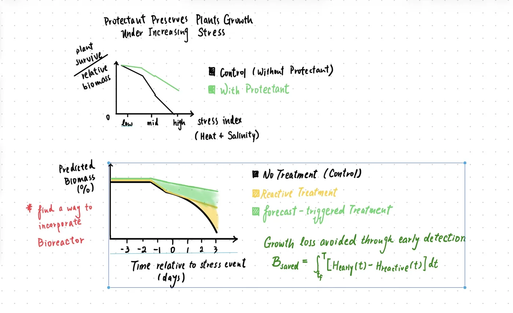
Working sketches from 15 August showing how different protectant treatments might affect plant biomass. These are conceptual predictions, not fitted results.
Because our current data are not sufficient for a reliable dose-response fit, we also considered several alternatives:
Use the measured salt-response data directly. If additional replicates are not available, we can report the salt calibration as measured points instead of fitting a curve.
Use published dose-response relationships as a starting point. If data for a similar protectant are available, we can use the published curve shape and fit only the scale to our own data. Any borrowed parameters would be clearly identified.
Compare treatment timing instead of fitting a curve. The pre-, co-, and post-treatment groups can still be ranked even if there are not enough points for a full model.
Combine the three plant measurements. The stress index gives us a way to use root length, fresh weight, and chlorophyll together rather than choosing only one measurement.
The updated model
The updated mathematical model extends beyond predicting a protectant concentration. It links historical weather and crop-yield data to stress forecasting, translates estimated demand into a response for the light-controlled production system, and uses plant-treatment data to estimate application requirements and potential field-scale constraints.
Our plant experiments contribute two particularly important inputs: the observed response to salt stress and the dose used in treatment trials. In Set 6, mean root length declined from 74.95 mm without added salt to 34.77 mm at 75 mM, 11.00 mm at 100 mM, and 1.36 mm at 150 mM. These measurements provide an empirical basis for distinguishing moderate stress from conditions in which growth is almost completely arrested. They also demonstrate why stress calibration must precede protectant screening: an excessively severe treatment leaves little room to observe a meaningful improvement.
Treatment timing provides a second connection between the experimental and modeling work. ReLEAF is designed to anticipate stress, so the model needs to account for the time between initiating production and applying the protectant. Our plant trials therefore compared pre-treatment, co-treatment, and post-treatment rather than investigating concentration alone. The updated dataset suggests that applying ACCD-containing supernatant before salt exposure may be beneficial, but the current evidence is preliminary and does not establish an optimal timing across replicated experiments.
The model also uses an initial DNPH-based activity estimate to explore production and field-application requirements. That measurement produced a preliminary signal, but its estimated activity was below the assay's quantification limit and was not based on replicated measurements. Consequently, the resulting production and application estimates should be interpreted as conditional projections rather than validated system capacities.
Together, the plant and dry lab work changed our objective from finding a curve that described our existing data to identifying the measurements needed for a reliable model. Future experiments should prioritize independent replicates, a more consistent treatment protocol, appropriate controls, and a dose-response series for ACCD. These improvements would allow the model to move from exploratory calculations toward predictions supported by experimental evidence.
Hydroponics with Prof. Cheng
Our hydroponics setup started with a visit to Professor Cheng Mei-Chun’s laboratory at NTU in March. At the time, we didn’t have a hydroponic protocol or any plants growing. We went to learn how her group grew Arabidopsis, created 5 hydroponic system prototypes, and brought it back to her in August.
27 March
Learning from Prof. Cheng
We visited Prof. Cheng's lab with no plants and no established protocol. She showed us how her group grows Arabidopsis on agar and in hydroponics, and gave us seeds to take back to our lab.
Her hydroponic setup was much simpler than we expected. It used plastic containers with foam boards that held the seedlings above the medium. We had assumed that a hydroponic rig was something you had to buy, but since there was no specialized commercial equipment, we decided to build our own version.
Prof. Cheng showing us an Arabidopsis agar plate.
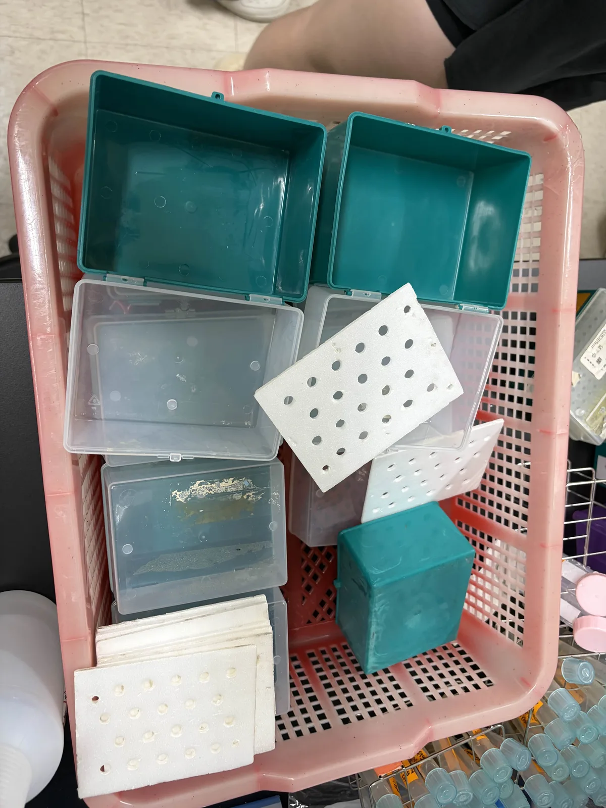
The hydroponic boxes and float boards in Prof. Cheng's lab.
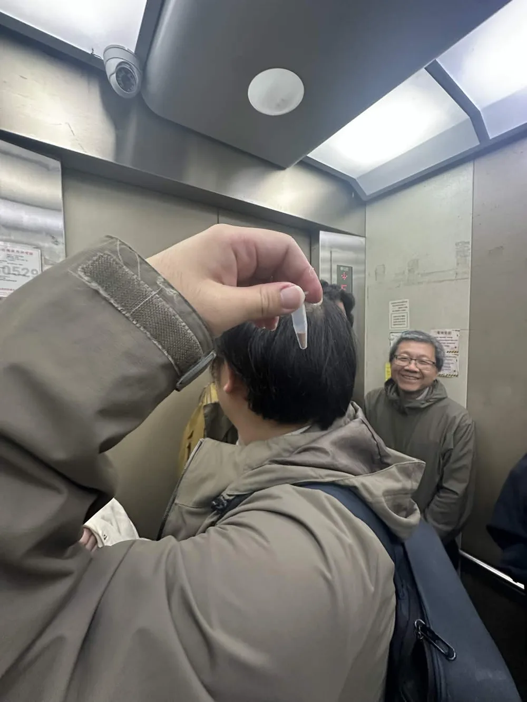
The Arabidopsis seeds we brought back from the visit.
April to July
Building our own system
We started making our own hydroponic boxes based on the setup we had seen at NTU. Our first prototypes used different combinations of containers, float plates, filter paper, and seedlings.
The first four prototypes had problems with contamination. Depending on the prototype, between 1 and 7 out of 10 seeds germinated before contamination became a problem. We kept changing the setup to identify where the contamination was coming from and to find a way to keep the seedlings in place.
Prototype 4 was the first design that allowed us to keep seedlings growing for several days without an immediate failure. On 7 June, we transferred seedlings from agar into the box. The setup stayed clean for the first six days, although contamination eventually became a recurring problem across our hydroponic experiments.
We also learned that maintaining the medium was more complicated than simply replacing water when it evaporated. On 17 June, Dr. Peng pointed out that topping up the evaporated medium would increase the concentration of the substances that remained behind, including salts and sugars. From then on, we treated evaporation as a variable instead of simply adding water back to the box.
On 20 June, Prof. Chen Wen-liang suggested moving toward a recirculating system. We had also considered an automatically filled reservoir, but neither design was built during this round of experiments.
30 May. Making the float boards by hand before our 3D-printed version.26 April. Three float boards made for different reservoir sizes.
11 August
Looking at a larger system
We visited 源鮮智慧農場 to see how hydroponics was handled on a commercial scale. Our setup at the time held about 250 mL, so seeing rows of larger growing systems gave us a different perspective on how the floating structure could be supported.
We were particularly interested in the underside of the growing channel, where the float board was supported. We discussed the design while we were there and started modifying our own CAD model that same day.
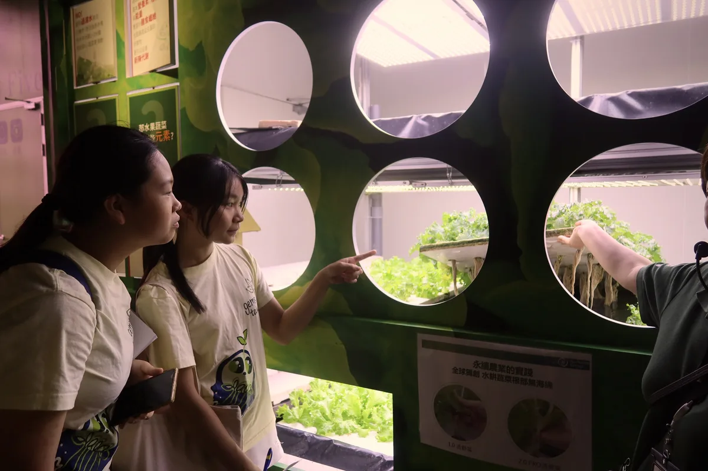
Looking at the underside of a commercial hydroponic growing system.
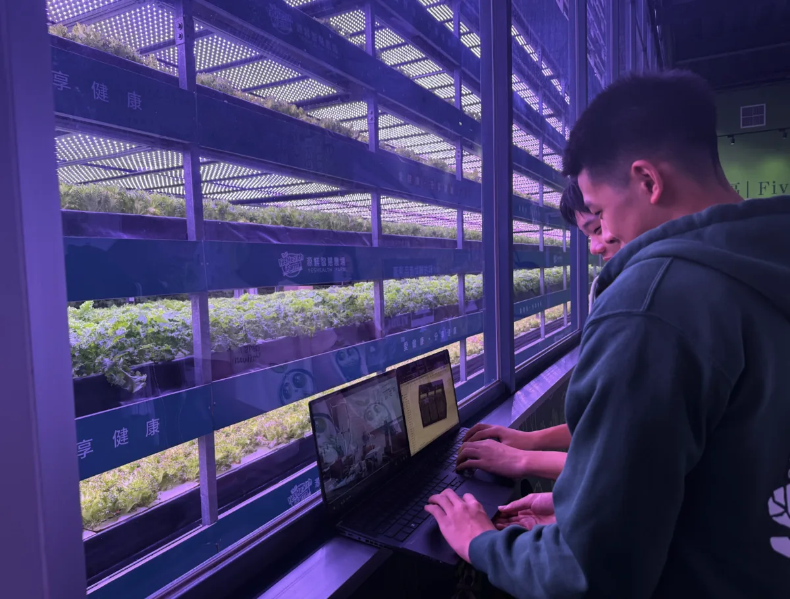
Redesigning the float plate after the farm visit. The current design has thirteen planting positions.
28 August
Returning to Prof. Cheng
In August, we returned to Prof. Cheng's lab with two of our hydroponic boxes and an update on our progress. We went through the suggestions she had given us in March and discussed which ones we had been able to implement. Four of the seven had been completed; the ROS staining experiment had not, and we told her that directly.
By this point, we had also removed trehalose from the circuit design and completed the salt ladder experiments. The main problem we brought back to her was contamination. We were still seeing contamination in our hydroponic boxes, even when we changed the medium every two to three days.
One possibility was the agar left in the seedling caps. Our seedlings were transferred with ½ MS medium containing 1% sucrose, and the combination of agar, sugar, warmth, and moisture could provide conditions for other organisms to grow. We also still had questions about why the plants were staying small and whether this was related to the medium strength, agar hardness, or light conditions.
We offered to leave two of our setups with Prof. Cheng so that she could observe them over a longer period. This gave us a chance to get feedback on problems that were difficult to diagnose from individual experiments.
Returning to Prof. Cheng's lab with our hydroponic setups in August.
Outreach
ReLEAF's plant work was shaped not only by experiments, but also by the people who helped us interpret our results and understand the conditions in which our system might eventually be used. Between March and August, we made thirteen visits involving researchers, farmers, agricultural businesses, and students. These conversations exposed assumptions that were difficult to identify from laboratory work alone: a protocol that appeared reasonable on paper could fail under practical conditions, a promising plant response did not automatically establish a usable treatment, and a technically functional system would still need to address the realities of agricultural practice.
Laboratories
Our discussions with plant scientists influenced both the design of our experiments and the way we interpreted their results. During our first visit to Prof. Cheng Mei-Chun's laboratory at National Taiwan University on 27 March, we learned how her group cultivated Arabidopsis thaliana and received seeds to establish our own experiments. Her laboratory provided a practical starting point for developing our agar and hydroponic protocols rather than attempting to design every procedure from scratch.
On 4 April, Dr. Verslues at Academia Sinica introduced us to the vertical Arabidopsis plates used in his growth chamber. This observation inspired our own vertical plate rack, which allowed roots to grow along a visible surface and made repeated measurements more practical. He also suggested gradually increasing soil salinity to avoid exposing plants to the full stress level immediately. When we later discussed the approach with Prof. Cheng, she pointed out that the proposed ramp could be too mild for the older plants we had initially selected. This exchange showed us that an experimental protocol cannot be evaluated independently of plant age and developmental stage: a method suitable for one condition may not produce the intended stress under another.
Our second visit to Prof. Cheng on 28 August was especially valuable because we could discuss problems encountered after several months of experimentation. We reported continued contamination in our hydroponic boxes despite frequent medium changes, as well as uncertainty about plant growth and the effects of residual agar and sucrose. We brought our actual setups and reviewed which earlier recommendations had been implemented and which questions remained unresolved. Her feedback included changes to our planting method, treatment approach, and soil salinity schedule.
We also consulted Prof. Chen Wen-liang about our bioreactor, mathematical model, and planting device. His feedback prompted us to consider a recirculating hydroponic system and an automatically filled reservoir. These ideas remain future design directions rather than completed features, but the discussion broadened our view of system performance. We learned that the growing platform must be manageable over time and not just functional during a short demonstration.
Across these meetings, expert engagement became a crucial part of our research process. We arrived with protocols and prototypes, returned with experimental evidence, and used feedback to identify the next problem to address. The value of these collaborations was therefore not simply the advice we received, but the way it helped us revise our assumptions and make more informed experimental decisions.
4 April, Academia Sinica with Prof. Verslues. Vertical Arabidopsis plates in a growth chamber. We used this setup as a reference when designing our own rack.20 June. Prof. Chen reviewing our proposed auto-filling reservoir.
Farms and markets
We also wanted to understand plant stress from the perspective of people who actually grew crops.
Our conversations with farmers helped us connect controlled plant-stress experiments with the practical challenges of agricultural work. At 花博農民市集 on 16 May, we interviewed farmers about the problems they encountered in their fields. Weather and water availability emerged alongside the cost of treatments, reminding us that a useful agricultural intervention must address more than a biological mechanism. It must also be relevant to the conditions farmers face and the resources available to them.
During our 21 July visit to Teacher Chen Hui-wen's farm, we observed how she evaluated soil and plants in the field and helped harvest okra and luffa. Discussing seeds and farming practices gave us a more concrete understanding of the decisions that occur outside a controlled laboratory. The visit also inspired our team to develop a prototype seed-trading platform based on needs raised during the conversation.
These experiences encouraged us to consider accessibility as part of ReLEAF's design problem. A system intended to support small-scale farmers cannot be evaluated solely by whether its biological components function; its practical requirements and relevance to farming routines also matter. The conversations did not establish that ReLEAF is already suitable for field use, but they helped us identify the questions that future development must answer.
16 May, 花博農民市集. Interviewing farmers about the problems they encounter while growing crops.
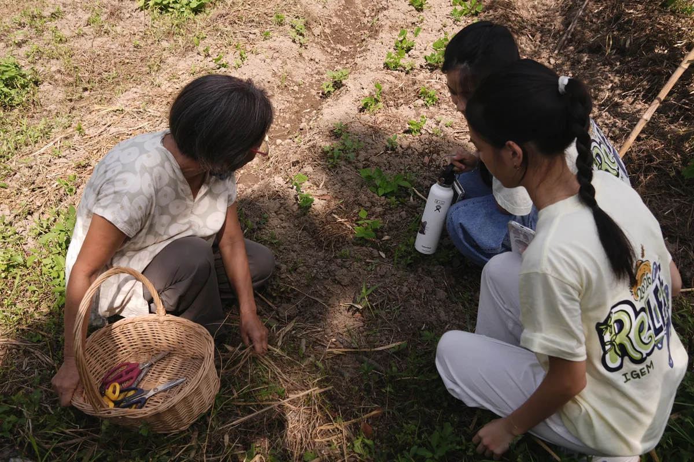
21 July. Teacher Chen Hui-wen showing us the plants and soil in her field.
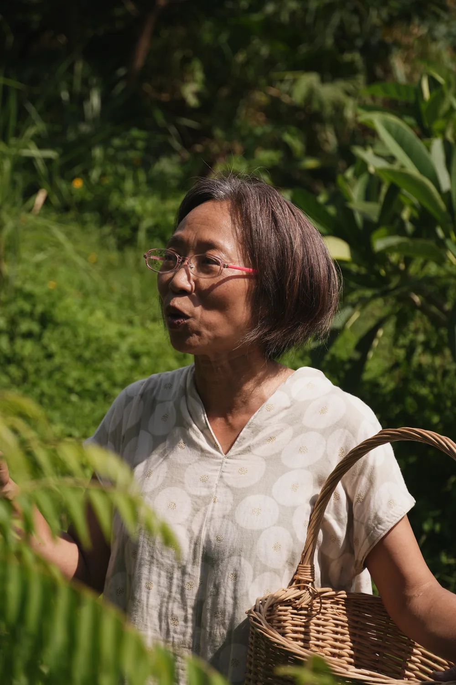
Teacher Chen Hui-wen during our visit.
Industry
We also visited two organizations working with agricultural biotechnology and hydroponic farming.
Our visit to CH Biotech (正瀚生技) on 9 July gave us an opportunity to learn about commercial plant biostimulants and the considerations involved in bringing them to market. Researchers introduced their work, and a regulatory specialist explained some of the requirements associated with commercial development. We also received the product 富肽2號, which became the protectant used in our seventh experimental set.
Testing this product allowed us to examine treatment timing using a commercially available preparation. However, because its active components were not fully disclosed to us, we could not attribute any observed plant response to a particular molecule. We therefore treated it as a product-level comparison rather than evidence for the activity of a specific compound. This distinction helped us recognize that promising treatment results and identification of the underlying mechanism are separate research objectives.
At 源鮮智慧農場 on 11 August, we examined a commercial hydroponic system and discussed our own growing hardware with the farm director. Comparing a large operational installation with our small laboratory boxes highlighted the difference between a prototype designed for controlled experiments and equipment intended for sustained use. The visit prompted us to reconsider the structure of our planting board and modify its design. Although this did not resolve every problem in our hydroponic trials, it gave us a more practical basis for evaluating the durability and usability of our hardware.
Together, these industry visits connected our experiments with two further questions: how a plant treatment can be evaluated responsibly when its composition is not fully known, and how laboratory hardware must change when practical operation becomes a design priority.
9 July, 正瀚生技. Learning about CH Biotech's research and plant biostimulant products.9 July. 富肽2號, which we later used in Experiment Set 7.11 August, 源鮮智慧農場. Looking at a commercial hydroponic system and comparing it with our laboratory setup.
Classrooms
Our outreach activities also challenged us to explain plant biology and synthetic biology to audiences with different levels of scientific experience.
At DingXi Elementary School on 25 June and 2 July, we introduced students to photosynthesis, genes, and synthetic biology, followed by a chlorophyll-extraction activity. The activity gave students a visible connection between the green colour of leaves and the biological processes discussed in the lesson. It also required us to translate technical ideas into explanations that could be understood without assuming prior knowledge.
At Fushing in June and again on 14 August, we introduced students to synthetic biology, DNA, engineered mutants, and iGEM. Teaching these concepts reinforced the importance of distinguishing what an engineered system is designed to do from what experimental evidence has actually demonstrated. The same distinction matters in our own research: describing a proposed biological mechanism is not equivalent to demonstrating its effectiveness.
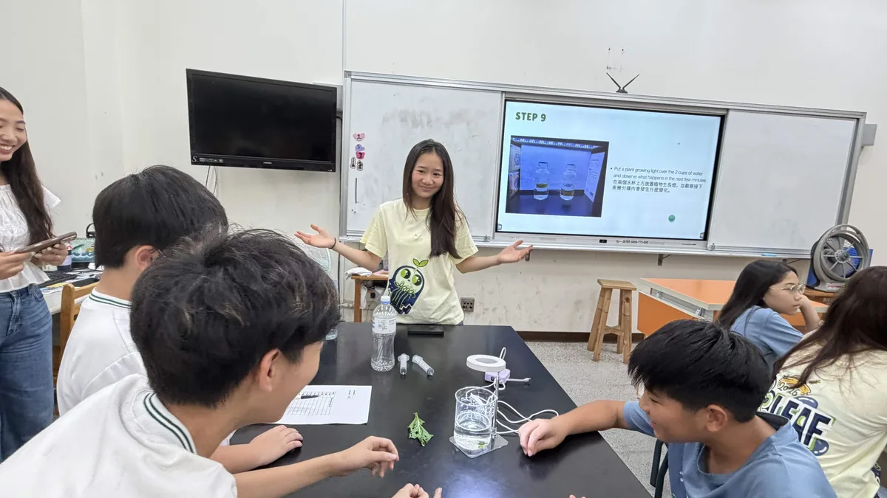
25 June, DingXi Elementary. Introducing photosynthesis before the chlorophyll extraction activity.
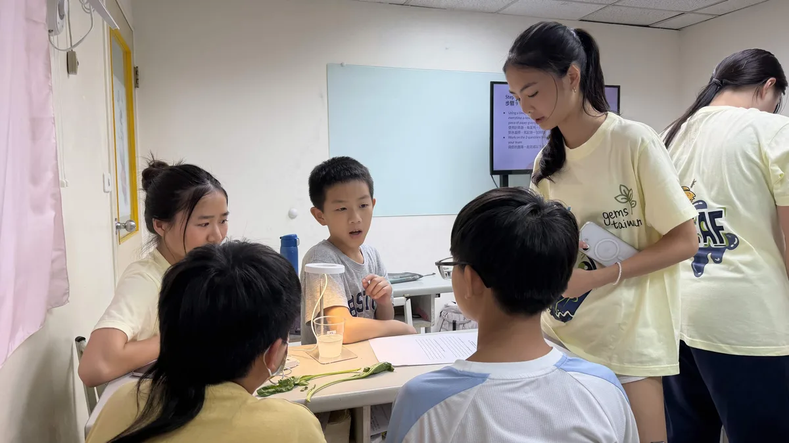
2 July. Students extracting chlorophyll from leaves.
The public
Our public forum on 5 September brought our plant experiments, bioreactor, and Taiwan crop-stress map together in a shared exhibition. Preparing the booth and presentation required us to explain how the different parts of ReLEAF were connected, rather than presenting each component as an isolated achievement. It also gave visitors an opportunity to ask questions about the purpose and limitations of our work.
These educational and public-facing activities expanded the role of our plant research. We were not only developing experiments, but also learning how to communicate their purpose, evidence, and limitations to people outside our team. That experience reinforced a principle central to responsible science communication: making a project accessible should not mean overstating what it has achieved.
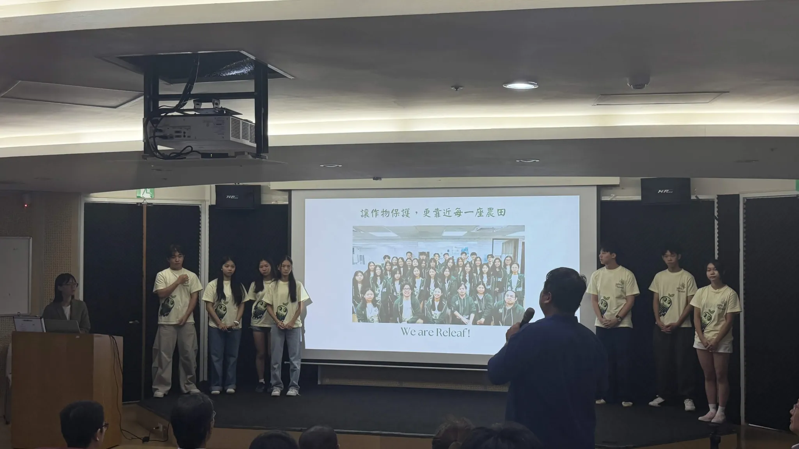
Presenting our project to both a public audience and experts we invited.Explaining regions of high crop stress in Taiwan.
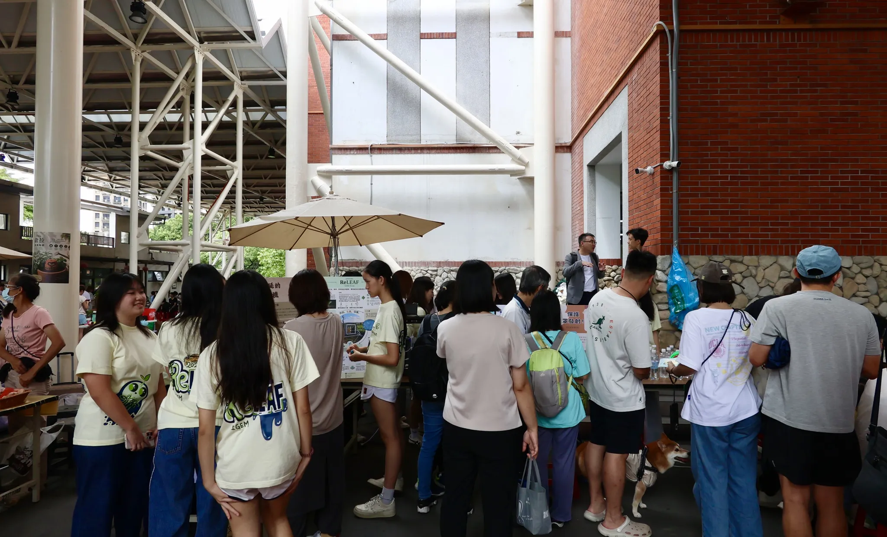
The public forum event booth.Introducing our bioreactor to the public.
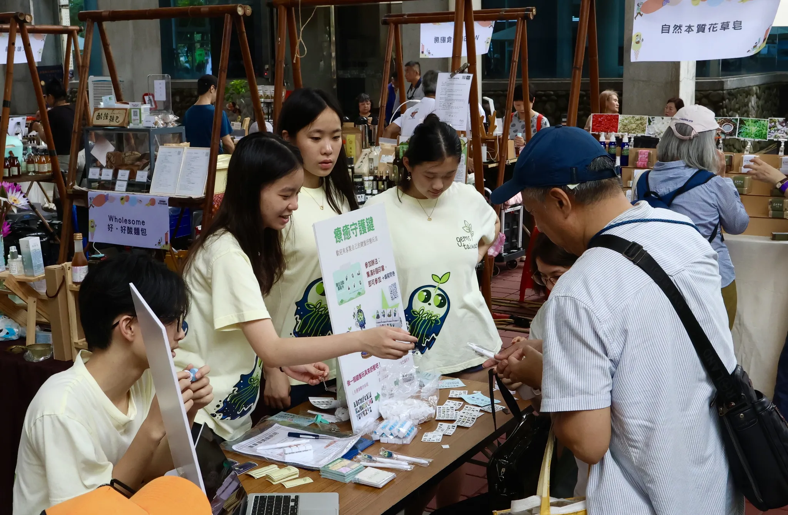
The prize for those who visit all stops at our booth.
Future work
Active peptide identification
CH Bio peptide is a mixture, so a rescue does not say which component did it. Fractionating the preparation and running the fractions through the same three-timing assay would turn a product that works into a sequence we can build.
High-throughput screening
One protectant takes about 24 days on the current assay. Three changes would make it a pipeline:
Round plates scored from a single photograph, forty plants at a time.
A fixed imaging rig for each plate format, with controlled white balance.
References
Boyes, D. C. et al. Growth stage-based phenotypic analysis of Arabidopsis: a model for high throughput functional genomics in plants. The Plant Cell13, 1499–1510 (2001). Link
Trehalose and salinity dose ranges in Arabidopsis. Set both the 1–10 mM trehalose and the 150 and 250 mM NaCl levels used in experiment set 5. PMC4212613
Lee, J. H. et al. A rapid assay for assessing bacterial effects on Arabidopsis thermotolerance. Plant Methods19, 63 (2023). A 45 °C challenge with a recovery phase; considered and not adopted. doi:10.1186/s13007-023-01022-0
Auverlot, J., Reichheld, J.-P. & Dard, A. Assays to study plant response to high temperature in Arabidopsis. Methods in Molecular Biology2988, 9–19 (2025). Used for the developmental stage and the structure of a heat assay. doi:10.1007/978-1-0716-4981-7_2
Zhang, Z. & Huang, R. Analysis of malondialdehyde, chlorophyll, proline, soluble sugar, and glutathione content in Arabidopsis seedling. Bio-protocol3(14) (2013). The chlorophyll extraction followed from set 4 onward; sets 1 to 3 have no chlorophyll data. doi:10.21769/bioprotoc.817
Root length quantification. Recommended to us alongside SmartRoot, which we did not end up using; all root lengths on this page were traced by hand in ImageJ. Bio-protocol 1216
Conn, S. J., Hocking, B., Dayod, M., Xu, B., Athman, A., Henderson, S., Aukett, L., Conn, V., Shearer, M. K., Fuentes, S., Tyerman, S. D. & Gilliham, M. Protocol: optimising hydroponic growth systems for nutritional and physiological analysis of Arabidopsis thaliana and other plants. Plant Methods9, 4 (2013). The lid-and-rack germination step and the float-board transfer follow this method. doi:10.1186/1746-4811-9-4
Kim, K., Kyaw, E. P., Ramasamy, K., Walitang, D. I. & Rajasekaran, R. ACC deaminase producing Methylobacterium oryzae CBMB20 and exogenous trehalose application alleviate salinity stress in Arabidopsis. Journal of Microbiology and Biotechnology35, e2501007 (2025). Source of the 25 mM daily soil accumulation schedule we started with. doi:10.4014/jmb.2501.01007
Cheng, M.-C., Liao, P.-M., Kuo, W.-W. & Lin, T.-P. The Arabidopsis ETHYLENE RESPONSE FACTOR1 regulates abiotic stress-responsive gene expression by binding to different cis-acting elements in response to different stress signals. Plant Physiology162(3), 1566–1582 (2013). Source of the soil salt schedule we adopted after the 6 September comparison. doi:10.1104/pp.113.221911
Zhang et al. (2022). Mitochondrial fission complex is required for long-term heat tolerance of Arabidopsis. The basis of the 37 °C thermo priming assay.
Cortés-Jiménez, D., Gómez-Guzmán, A., Iturriaga, G., Suárez, R., Montero Alpírez, G. & Escalante, F. M. E. Microorganisms associated to tomato seedlings growing in saline culture act as osmoprotectant. Brazilian Journal of Microbiology45(2), 613–620 (2014). doi:10.1590/S1517-83822014000200032
Rolly, N. K., Imran, Q. M., Lee, I.-J. & Yun, B.-W. Salinity stress-mediated suppression of expression of salt overly sensitive signaling pathway genes suggests negative regulation by AtbZIP62 transcription factor in Arabidopsis thaliana. International Journal of Molecular Sciences21(5), 1726 (2020). doi:10.3390/ijms21051726
Wang, A., Guo, J., Wang, S., Zhang, Y., Lu, F., Duan, J., Liu, Z. & Ji, W. BoPEP4, a C-terminally encoded plant elicitor peptide from broccoli, plays a role in salinity stress tolerance. International Journal of Molecular Sciences23(6), 3090 (2022). doi:10.3390/ijms23063090
Li, R., Liu, M., Hu, X., Li, J., Pang, Q., Yan, X., Li, J. & Ji, W. Broccoli plant elicitor peptide BoPEP4 enhances plant salt tolerance by improving glucosinolate metabolism. Plant Science364, 112954 (2026). doi:10.1016/j.plantsci.2025.112954